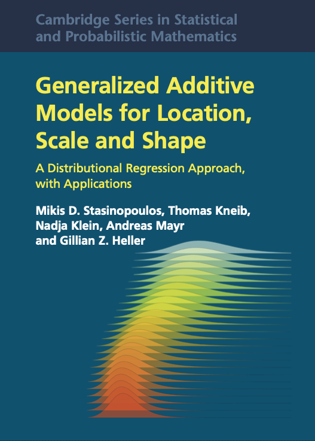
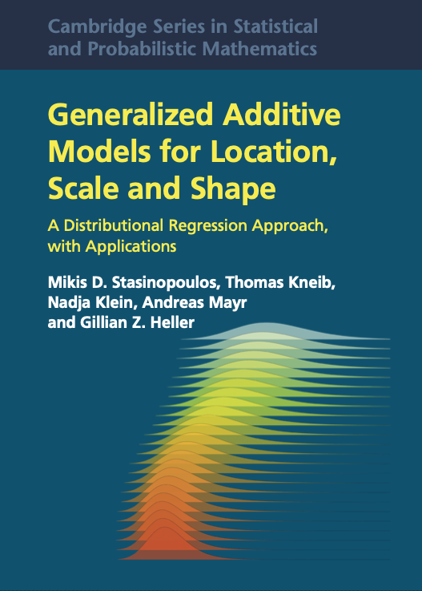

mLM <- gamlss(rent~area+poly(yearc,2)+location+bath+kitchen+
cheating,
~area+yearc+location+bath+kitchen+cheating,
family=BCTo, trace=FALSE, data=da)
summary(mLM)******************************************************************
Family: c("BCTo", "Box-Cox-t-orig.")
Call: gamlss(formula = rent ~ area + poly(yearc, 2) + location +
bath + kitchen + cheating, sigma.formula = ~area +
yearc + location + bath + kitchen + cheating, family = BCTo,
data = da, trace = FALSE)
Fitting method: RS()
------------------------------------------------------------------
Mu link function: log
Mu Coefficients:
Estimate Std. Error t value Pr(>|t|)
(Intercept) 5.0138582 0.0277852 180.451 < 2e-16 ***
area 0.0106311 0.0002331 45.613 < 2e-16 ***
poly(yearc, 2)1 5.0382576 0.3360044 14.995 < 2e-16 ***
poly(yearc, 2)2 3.3475762 0.2737237 12.230 < 2e-16 ***
location2 0.0875504 0.0102485 8.543 < 2e-16 ***
location3 0.1967006 0.0385032 5.109 3.44e-07 ***
bath1 0.0415393 0.0219353 1.894 0.0584 .
kitchen1 0.1120385 0.0243199 4.607 4.25e-06 ***
cheating1 0.3297044 0.0243422 13.545 < 2e-16 ***
---
Signif. codes: 0 '***' 0.001 '**' 0.01 '*' 0.05 '.' 0.1 ' ' 1
------------------------------------------------------------------
Sigma link function: log
Sigma Coefficients:
Estimate Std. Error t value Pr(>|t|)
(Intercept) 10.4022601 0.7528378 13.817 < 2e-16 ***
area 0.0012116 0.0006135 1.975 0.0484 *
yearc -0.0059332 0.0003864 -15.356 < 2e-16 ***
location2 0.0595118 0.0254048 2.343 0.0192 *
location3 0.2191754 0.0930995 2.354 0.0186 *
bath1 0.0058254 0.0087229 0.668 0.5043
kitchen1 0.0400246 0.0882200 0.454 0.6501
cheating1 -0.2453139 0.0487224 -5.035 5.06e-07 ***
---
Signif. codes: 0 '***' 0.001 '**' 0.01 '*' 0.05 '.' 0.1 ' ' 1
------------------------------------------------------------------
Nu link function: identity
Nu Coefficients:
Estimate Std. Error t value Pr(>|t|)
(Intercept) 0.65631 0.05598 11.72 <2e-16 ***
---
Signif. codes: 0 '***' 0.001 '**' 0.01 '*' 0.05 '.' 0.1 ' ' 1
------------------------------------------------------------------
Tau link function: log
Tau Coefficients:
Estimate Std. Error t value Pr(>|t|)
(Intercept) 3.2918 0.4411 7.463 1.09e-13 ***
---
Signif. codes: 0 '***' 0.001 '**' 0.01 '*' 0.05 '.' 0.1 ' ' 1
------------------------------------------------------------------
No. of observations in the fit: 3082
Degrees of Freedom for the fit: 19
Residual Deg. of Freedom: 3063
at cycle: 10
Global Deviance: 38254.51
AIC: 38292.51
SBC: 38407.14
******************************************************************  The Books
 The Books